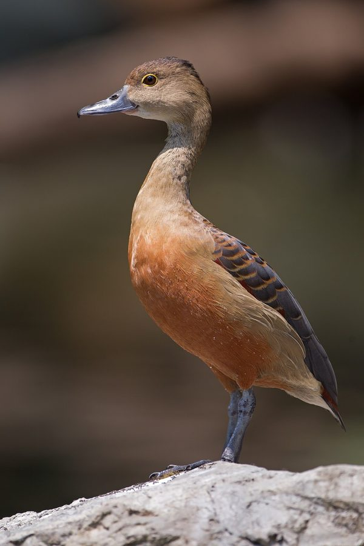

The wildlife of the Basti–Ayodhya region बस्ती–अयोध्या क्षेत्र की जैव विविधता
Every weed, insect, bird and frog of the Basti–Ayodhya countryside in eastern Uttar Pradesh, written in Hindi and English. We started with the ones nobody writes down: the weeds, the roadside insects, the so-called pests. They are the backbone.
582 species profiled · 552 with a photograph · 0 read end to end by the curator · 0 confirmed by a local sighting — be the first
What to look for in October अक्टूबर में क्या देखें
The species whose season is now, according to published accounts for eastern Uttar Pradesh. Not a record of what anyone has seen. 461 more species are about all year.
Winter visitors are here: 34 species from Central Asia, Siberia and the Himalayas, October to March. See who has arrived → Summer visitors are here: 4 species that come with the heat and the monsoon. See who is here →


Quiet month. Everything here is about all year — explore all 582 species.
Species of the day आज की प्रजाति

Make & use उपयोग
Rope from munja, soap from reetha and neem, bricks from rice husk: what the species here can become, labelled as tradition, current practice or research lead. Browse by use →
Explore श्रेणी से देखें
Go in by the kind of thing you saw.